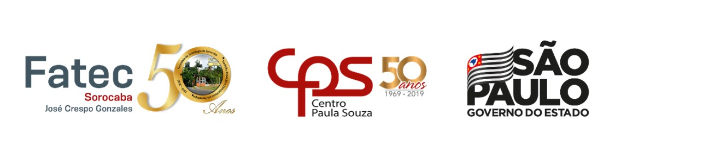

Faculdade de Tecnologia de Sorocaba
Tecnologia em Análise e Desenvolvimento de Sistemas
Segurança na Web
Prof.ª Denilce de Almeida Oliveira Veloso
Disciplina Programação Web
Gabriel Torres Guimarães 0030481823019
Sorocaba
Agosto/2020
1. Introdução
A Internet proporciona a conexão entre bilhões de computadores ao redor do
mundo, permitindo, assim, o compartilhament de informações.
Utilizando o recurso da Web para acessar essa rede, pode-se fazer inúmeras
atividades, como pesquisas, troca de mensagens e, na última década,
as compras e os pagamentos online têm se intensificado.
Com base nesse contexto, a preocupação com a segurança na Web tem se tornado
também cada vez maior.
Neste trabalho serão englobados alguns métodos de ataque e mecanismos que
os desenvolvedores e usuários podem utilizar para se proteger.
2. SEGURANÇA NA WEB
Conforme a Web foi evoluindo e sendo cada vez mais utilizada,
para a realização de inúmeras tarefas, praticamente para cada uma delas
foi desenvolvida uma forma de ataque aos dados, principalmente aos financeiros.
A seguir, são listados algumas formas criadas de ataque na Web e,
na sequência alguns mecanismos de proteção.
2.1. Tipos de Ataque
Existem diversos tipos de ataque desenvolvidos para afetar os usuários
navegando na Web, conforme descrito abaixo:
-
Fraude de antecipação de recursos: solicitado o pagamento urgente
e sigiloso de uma enorme quantia de dinheiro para depois ser recompensado
com uma ainda maior. Ou ainda, é solicitado seus dados bancários para ser
recompensado de alguma forma por alguém desconhecido.
-
Phishing: atraem a atenção do usuário, se passando por algum órgão
conhecido ou um anúncio interessante.
-
Pharmig: redirecionar a navegação para sites falsos, por meio de
alterações no serviço de DNS(Domain Name System).
-
Malware: códigos maliciosos programados especificamente para executar
ações prejudiciais ao computador infectado.
-
Worm: programa que se propaga automaticamente pela rede,
infectando outras máquinas por meio de cópias executáveis.
-
Spyware: projetado para espionar as atividades realizadas
no sistema. Usado para capturar dados inseridos na máquina.
-
Cavalo de Troia: advindos de “benefícios” na internet que
parecem interessantes, mas, após baixados, executam ações maliciosas
na máquina, podendo desde liberar o acesso da máquina à invasores até
apagar todos os dados e arquivos.
-
Spam: emails não desejados contendo arquivos ou links que podem
conter vírus.
-
Brutal force: tentativas automatizadas de acesso à uma página
de login utilizando senhas comuns.
2.2. Mecanismos de Segurança
Alguns mecanismos de segurança devem ser aplicados, tanto por parte dos
desenvolvedores de sites e aplicações web, quanto pelos usuários.
Estes são ainda os maiores alvos de ataques, visto que estão mais vulneráveis,
seja em decorrência do desconhecimento dos métodos, seja por descuido com a
segurança de seus computadores.
Mecanismos de segurança por parte dos provedores dos sites / aplicativos:
-
Autenticação (de preferência em dois passos) que permita a validação do usuário que solicitou o acesso.
-
Sigilo de dados: proteger informações contra acessos não autorizados.
-
Autorização: camadas de acessos e permissões que os diferentes tipos de usuários podem acessar.
-
Aplicação de criptografia para senhas, contas e dados sensíveis nos servidores.
Mecanismos por parte dos usuários:
-
Criar senhas fortes, com caracteres diversificados, números não sequenciais e caracteres especiais.
-
Verificar todas as informações, anexos e links que são enviados antes de baixá-los / executá-los.
-
Não fornecer informações para sites ou pessoas desconhecidas.
3. Conclusão
A partir das informações listadas nesta pesquisa, pode-se observar que foram desenvolvidos inúmeros métodos para tentar atacar os dados dos usuários na internet. Entretanto, a maioria é voltada para tentativas de enganá-los e não necessariamente de invasão dos programas diretamente.
Dessa forma, o mecanismo de proteção mais eficaz para os usuários - que geralmente são os destinos finais dos ataques – é a própria validação e ceticismo com relação ao que lhe é enviado. Não confiar em todas as informações, verificar anexos e precaver-se de instalação de softwares desconhecidos são as melhores formas de se evitar uma infecção.
4. Referências
Segurança na Internet. CERT. Disponível em: https://cartilha.cert.br/mecanismos/. Acesso em: 30 ago. 2020